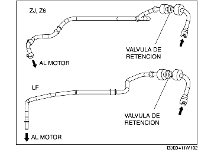

2. Comprobar que el aire fluye desde el lado del servofreno del tubo de vacío hacia el colector de admisión, y que el aire no fluye en dirección opuesta.

• En caso de funcionamiento incorrecto de la válvula de retención interna, sustituirla junto con el tubo de vacío como un conjunto único.